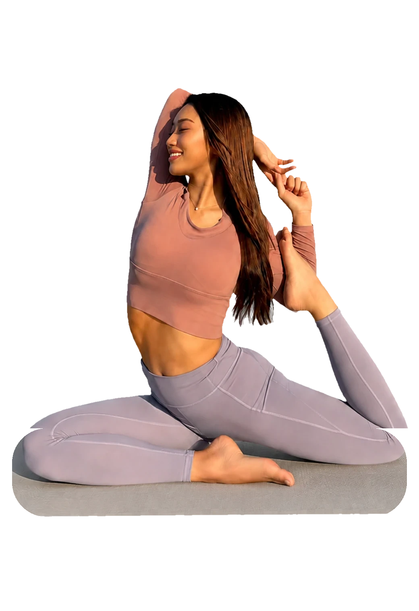

night subscription
夜20分サブスク
火・木 22:00〜の双方向オンライン。1回20分の軽いリセット習慣を、月額 ¥3,980〜で。無料体験もこの夜20分枠で受けられます。
LINEで相談する熊本｜ヨガ × 腸活 × ボディメイク
wellness by Reona — breathe, and begin again
忙しさの中で自分を後回しにしている人へ。ヨガや腸活、ボディメイクを通して、自分自身と向き合い、自分の人生を選べる状態へ。強くなるためじゃない、自分に戻るために。
全米ヨガアライアンス RYT200 ／ ベストボディ・ジャパン 九州大会2連覇（2024・2025）・大阪大会優勝（2025）

それは、意思が弱いからではありません。自分に合う整え方に、まだ出会っていないだけ。ここから一緒に始めましょう。
yoga × gut health × training
呼吸とともに、こわばった体と心をほどく。初心者の方も、体がかたい方も大丈夫です。
内側から整える食事と習慣のアドバイス。がんばる食事制限ではなく、続けられる整え方を。
体は、何歳からでも変えられる。一人ひとりの体力に合わせた無理のないボディメイク。
3つを別々にやるのではなく、あなたの体と暮らしに合わせて組み合わせる。だから結果が出て、無理なく続きます。
four ways
カードを左右にスワイプ
voices
体がとても硬くて、ヨガは私には無理だと思っていました。自宅から始められるオンラインで、腸活や筋トレも一緒に少しずつ。4ヶ月続けたら、朝の体の軽さも見た目も変わってきました。
※体重・体脂肪率・体調の変化には個人差があります。医療的効果を保証するものではありません。
下のボタンから友だち追加。気になることは、そのまま聞いてください。
LINEのやり取りで、ご希望の日時と受け方（スタジオ／オンライン／パーソナル）を調整します。
スタジオ、またはオンライン（Google Meet）で。初めてでも、体がかたくても、大丈夫です。

about Reona
私自身、体との向き合い方をこじらせて、心まで崩してしまった時期があります。そこから、食べること・動くこと・休むことを少しずつ整え直して、いまがあります。だから「整えれば、人はやり直せる」と、本気で思っています。
私は強い人じゃない。だから、整える。
弱くなる日があることを知っているから、また自分に戻れる方法を伝えたい。一緒に整えていけたら。
大丈夫です。ヨガは「かたい体をほどく」ためのものなので、かたい方ほど変化を感じやすいです。
できます。一人ひとりの体力に合わせて内容を調整するので、初めての方も安心してご参加ください。
動きやすい服装・タオル・お水をお持ちください。詳しくはご予約時にご案内します。
レッスンの種類によってご案内できる場合があります。LINEでお気軽にご相談ください。
スマホ1台で受けられます（Google Meetを使用します）。ヨガマットがあるとより快適です。
ご予約時にご案内します。日程の変更もLINEでご相談いただけます。
熊本でヨガやパーソナルトレーニングをお探しの方も、遠方からオンラインで整えたい方も。あなたの暮らしに合う受け方を、一緒に見つけましょう。
何度でも整え直せる。
人生はそこからまた始まる。
— wellness by Reona —
LINEで体験について相談する